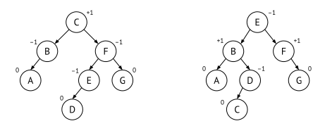
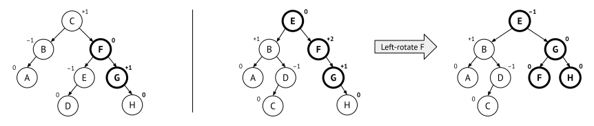
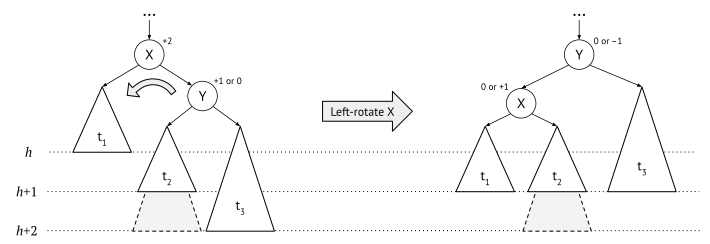
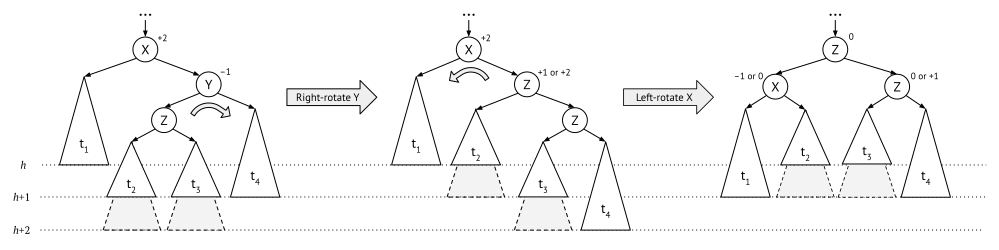

10.3 AVL trees
An AVL tree is a binary search tree with the following additional balancing invariant:
Invariant: AVL balance
For every node, the heights of its subtrees differ by at most 1.
Note that this does not mean that AVL trees are perfectly balanced. But the invariant guarantees that the height of the tree is never more than 1.44 times the height of a perfectly balanced binary search tree. (Side note: 1.44 is actually 1/\log_2(\phi), where \phi=(1+\sqrt{5})/2 is the golden ratio.) As always when it comes to complexity the exact constant is not important, but what it says is that the maximum height of an AVL tree is O(\log(n)) where n is its size.
To maintain the invariant, AVL trees need to store an additional property in every tree node, the balance factor. This is not really a “factor” (it has nothing to do with multiplication), but rather the difference in heights between the right and the left subtrees. Or in other words, \text{bf}(t) = \text{height}(t.\text{right}) - \text{height}(t.\text{left}). Using this notation, the invariant can be formulated like this:
-1\leq\text{bf}(t)\leq 1 \text{ for all tree nodes } t
When we draw AVL trees we usually write the balance factor beside each node. Figure 10.6 shows two balanced AVL trees representing the same set {A,B,C,D,E,F,G}.

Now we have to ensure that we restore the balance whenever a tree node becomes unbalanced, and we do that by using the tree rotations from Section 10.2.1. The tree can become unbalanced in two cases – when inserting and when deleting values.
10.3.1 Implementing AVL nodes
We can store the balance factor in every node, and this uses very little extra memory since there are only three possibilities, -1, 0 and +1. Therefore, storing the balance uses only two bits per tree node.
However, if we do this the implementations of insertion and deletion become slightly more complicated, so most AVL implementations store the height of each node instead. If we know the height of each tree node, it is easy to calculate the balance using the formula above. Storing the height will use more memory, but not a lot – it is enough to use only one byte (8 bits) for the height, because we will anyway never have room for any AVL tree with a height larger than 2^8=256
10.3.2 Inserting into an AVL tree
To insert a value into an AVL tree we first treat it as a standard binary search tree. The value will therefore be added as a new leaf node somewhere in the tree. But this might break the balance invariant of the parent node, or the parent’s parent, or any other ancestor all the way up to the root. For example, if we want to add H to the example trees in Figure 10.6, then they will look like in Figure 10.7, where the balance factors that are changed are marked in bold.

Notice that the left tree is still AVL balanced, so we do not have to do anything further. But in the right tree, the grandparent F have become unbalanced. The F node is right-heavy, and we can solve this imbalance by rotating it to the left. In this case it is enough with a single rotation.
Single rotations
The example above was when the unbalanced node had a right-right imbalance. This means that not only the node itself is right-heavy, but its child is too. When a node is right-right unbalanced, it has the general structure as shown in Figure 10.8. This means that the middle subtree t_2 cannot be higher than the rightmost subtree t_3. And since the grandparent x has balance +2, there are only two options: either t_3 has height one more than t_2, or they have the same height. After performing a single left-rotation, t_3 has moved up one level and the left subtree t_1 has moved down one level. The final subtree is now AVL-balanced, because no node has a balance factor outside of \{-1,0,+1\}.

Notice the difference with Figure 10.3, where we needed to reorganise the tree completely after adding one element. We managed this because the AVL invariant is relaxed, it does not require that the tree is perfectly balanced.
Double rotations
There is another right-heavy case – when the right-left grandchild (t_2) is higher than the right-right (t_3). If we perform a single rotation over x we do not win anything: the height of t_2 will turn the new tree into a left-right imbalance instead, which is just a mirror case of what we started from.
The solution is to perform a double rotation. That is, first we transform the right-left case into a right-right case, by a right rotation over y. After this we can rotate left over x. The whole double rotation is shown in Figure 10.9, and afterwards all nodes are AVL balanced!

The mirrored situations, left imbalances, are of course solved in the mirrored way, by performing right rotations.
10.3.3 Implementing insertion
AVL tree insertion and deletion are easiest to implement as recursive functions. They are very similar to the normal BST insertion and deletion, but as the recursion unwinds up the tree, we perform the appropriate rotation on any node that is found to be unbalanced.
Algorithm: Adding to an AVL tree, recursively
To add a value x to an AVL node:
- If the node is empty, return a node node with value x.
- If x is equal to the node value, return the node as it is.
- If x is smaller than the node
value:
- Reassign the left child with the result of adding x to it.
- If the node becomes unbalanced, single- or double-rotate to the right, depending on the kind of imbalance.
- Update the height of the node, and return it.
10.3.4 Deleting a node
Deletion in an AVL tree is similar to AVL insertion: first we use the normal BST deletion, and then we rebalance the parent nodes all the way up to the root.
We can start from the pseudocode in Section 10.1.3, and we just have to rebalance and update the height right before we return the updated tree.
10.3.5 Complexity analysis
How much extra time does it take to rebalance the tree?
When we add a new node (or delete one), several nodes might become unbalanced. But all of these nodes are ancestors of the added (or deleted) node. So in the worst case we have to rebalance all nodes that we passed when searching for the insertion point. That is, all nodes on the path from the root node to the added node.
Since an AVL tree is balanced, there are never more than O(\log(n)) ancestors to any node. So, in the worst case we will rebalance at most O(\log(n)) nodes after one insertion (or deletion).
Rebalancing one single node is constant time. It involves one or two rotations, and a rotation is constant time. Therefore, rebalancing a tree after insertion or deletion is logarithmic, O(\log(n)). In fact, rebalancing after addition is constant time, because the tree will always be balanced after the first rebalancing. But this doesn’t change the complexity of addition, because it is logarithmic to find the insertion point.
In summary, we have come up with our first efficient general-purpose data structure for sets and maps. This is also one of the most common ones in practice, and very easy to implement.
10.3.6 Yet another sorting algorithm
Using AVL trees we can define a very simple but efficient sorting algorithm. First we build an AVL tree from all elements, and then we do an inorder traversal (see Section 9.1.3) to get the elements in sorted order:
avlTreeSort(list):
tree = new ampty AVL tree
for each x in list:
add x to tree
return inorder(tree)What is the complexity of this algorithm? The slowest part is building the tree: it is a loop over n elements and each iteration adds to the tree, which is logarithmic in n. The final complexity of the loop is O(n \log(n)), and since inorder traversal is linear, the complexity of sorting via an AVL tree is O(n \log(n)).
This has the same complexity as Mergesort, which is as good as the best sorting algorithms. So why do not anyone use it? It is because the hidden constants are bigger than Mergesort: it takes longer time and also uses more extra memory.